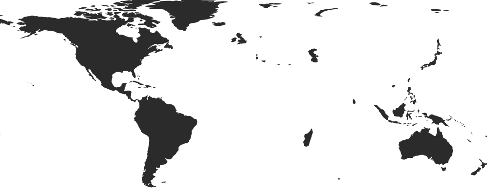

見つけるだけで、終わらせない。
外から実際に入れるかを試して穴を見つけ、その穴を当社が塞ぎます。
- 01無料の外部チェックドメインを入れるだけ
- 02侵入できるか試す承諾をいただいた範囲で、外から実際に試す
- 03当社が直す影響を洗い出してから直す
- 04稼働証明書診断と修正の記録を毎月

- 読み込み中
数字は、この画面を開いたときに各機関の公開データから読み込んでいます。赤い点は攻撃元の上位40か国で、大きいほど攻撃の記録が多い国です。白い点が日本です。
税別。社員の給料は厚生労働省 job tag の「セキュリティエキスパート」の年収で、採用の費用と社会保険料は含みません。
こんな状態になっていませんか？
セキュリティの担当者がいない会社では、こうしたことが起きています。ホワイトハックは、この「見つかっても直せない」をまるごと引き受けます。
ホワイトハックの始め方
3から先は、ドメインの所有確認と書面の承諾が揃ってから進みます。
- STEP 1whitehack.jp でドメインを入力し、無料診断の結果を見る
証明書の公開ログ、公開DNS、WHOISといった誰でも見られる記録だけを読みます。お客様のサーバーには接続しません。
- STEP 2無料で相談する
結果を一緒に見て、どこまで任せるか、プランを選びます。
- STEP 3申込書と承諾書を出し、ドメインの所有確認を済ませる
所有者の承諾なしに接続して調べると、不正アクセス禁止法に違反するおそれがあります。両方が揃うまで、1回も接続しません。
- STEP 4当社が診断し、診断書をお渡しする
入力欄に検査用の文字列を送り、実際の攻撃と同じ手順で試します。データの書き換えや削除はしません。
- STEP 5直すものを選ぶ。当社が直し、直ったかを確かめて記録する
直すと止まるもの（メール配信や予約システムなど）を先に洗い出し、登録を済ませてから直します。
- STEP 6毎日の診断と、毎月の報告・稼働証明書
新しい脆弱性は毎日公表されます。毎日診断し、変化があった日にお知らせします（月額プラン）。
料金（税別）
セキュリティを任せる社員を1人雇うと、給料だけで年609.8万円かかります（厚生労働省 job tag）。しかも、採用できるまで対策は始まりません。ホワイトハックは申し込んだ日から始まり、担当の人が辞めても、診断と記録は止まりません。
公開されている情報だけで、外から見えている弱点を出します。
今すぐ調べる →1回・診断書つき。承諾の後に、実際につないで入力欄まで試します。
毎日の診断、変化があった日のお知らせ、毎月の報告。
ライトに加え、見つかった弱点を当社が直し、毎月の稼働証明書を発行します。
サーバーの中の修正、移行、改修は個別にお見積りします。稼働証明書は、その月に行った診断と修正の記録を当社がまとめて発行する書面です。
Webサイト・ドメイン・メールの設定と、インターネットに公開している機器（承諾をいただいたVPN機器や委託先のサーバーを含む）の診断と修正、その記録。
社員のパソコン1台ずつの管理、24時間の監視、事故が起きた時の駆けつけと調査（個別にお見積り）。
そのほかのサービス
ホワイトハックのほかに、助成金を使えるAI研修、自社開発のAIプロダクト、AIの導入支援も引き受けています。
ホワイトハック（セキュリティ担当の代行）
サイト・メール・VPN機器の脆弱性診断とペネトレーションテスト（外から実際に入れるかを試す検査）を、書面で承諾をいただいた範囲で行い、見つけた穴を当社が直します。毎日診断し、その月に行った診断と修正の記録を稼働証明書として毎月お渡しします。ライトは月3万円、スタンダードは月15万円（税別）。セキュリティを任せる社員を1人雇うより安く始められます。
AI研修・社員リスキリング（助成金対象）
貴社の実業務を教材に、生成AIを「翌日から仕事で使える」状態にする実践型研修です。訓練経費は人材開発支援助成金（事業展開等リスキリング支援コース）で中小企業なら最大75%が助成対象。ただしこの助成コースは今年度（令和8年度）で終わります。訓練を2027年3月末までに終える必要があり、計画届は訓練開始の1か月前までに労働局へ提出します。そこから逆算すると、動ける時間はもう長くありません。
AIチャットエージェント
自社を覚えたAIをひとつ育てて、自社サイトへの1行埋め込み・LINE等のSNS・社内ツールのどこにでも設置。問い合わせ対応・予約受付・見積もり案内から社内マニュアル参照まで、24時間365日自動化。CRMやカレンダーと連携し、社外の接客も社内のナレッジも、ひとつのAIでこなします。
AIwill（社長クローンAI）
経営者の思考・判断・経験をAIに学習させ「もう一人の社長」をつくります。経営判断の壁打ち相手になり、社長に集中する相談を肩代わり。社員はいつでも社長の考え方を参照でき、意思決定のスピードと一貫性が上がります。後継者育成・属人化の解消にも。スティーブ・ジョブズ版のデモを公開中。
AIside（アイサイド）／ あなたの付き人AI
一人社長・多忙な経営者のための「付き人AI」。Gmail・カレンダー・Slack・Chatworkなど既存ツールを横断し、予定調整・メール下書き・タスク整理・情報集約を先回りで代行。あなたの仕事のやり方を覚えて、もう一人の自分として日々の雑務を引き受けます。
見つけた弱点を自分たちで直し、直した記録を毎月お渡しする。
弱点を見つけて報告書を渡すだけでは、直す人がいない会社は何も変わりません。そこまでを、私たちの仕事だと考えています。（代表取締役 佐藤徳之介）
導入事例・つくれるもの
1件ごとに人が90分ほどかけていた対応が、AIで約3分に。時間にして約97%の削減です（当社計算）
条件に合う特別養護老人ホームを1件ずつ調べていた作業が、公的データベース×AIの検索で約1分になっています
任せる範囲と資料の状態により変わります（一律の期間は約束しません）
自社の資料だけを根拠に答える仕組みです。運用の中で資料や回答例を蓄積・反映し、会社に馴染んでいきます。介護・福祉、不動産で導入・継続稼働中です
業務別のAIの効果（当社・導入先での実測値）
コード生成AIの活用で、開発タスクの完了時間を短縮（当社実測）
ルールに基づくデータ整理・表記修正・集計のAI化による短縮（当社実測）
ドラフト作成・要約・誤字校正の活用による短縮（当社実測）
回答案の自動生成などによる、1時間あたりの処理件数の向上（導入先での実測）
数字は当社の業務および導入先での実測にもとづきます。お客様ごとの詳細な数字は、承諾をいただけたものから順次公開します。実態と異なる数字は掲げません。
安心して任せていただくために
発注前に気になる点を、先にこちらから開示します。詳細の資料は無料相談時にお渡しします。
診断の前に必ず踏む手順
- ドメインの所有確認と書面の承諾が揃うまで、お客様のサーバーには1回も接続しません
- 承諾番号は診断書に印字します。データの書き換えや削除はしません
- DNSの書き換えは、診断の承諾とは別の同意をいただいてから行い、誰がいつ何を変えたかを記録に残します
- NDA（秘密保持契約）に対応します。個人情報の扱いはプライバシーポリシーに明記しています
窓口・サポート
- 相談から設計・導入・運用まで、窓口を一本化しています。担当者の交代で話が振り出しに戻ることはありません
- 導入後の質問・不具合は、運用契約の範囲で対応します
- 連絡はメール・オンライン会議に対応。全国どこでも対応できます
契約・保守の考え方
- 初期導入と月々の運用（資料更新の反映・回答の改善・不具合対応）を分けてお見積もりします
- 追加費用が発生する条件は、契約前に書面でお伝えします
- 試作・テストの段階で合わないと感じたら、そこで止めて構いません。合わないまま契約を進めることはしません
先にお伝えしていること
- 効果が出やすい業務から順にご提案します。AIに向かない業務は、その理由と代わりの進め方を相談の場でお伝えします
- 元になる資料・データがない業務は、精度が出ません。その場合は資料づくりから一緒に始めます
- 社内に「使う担当者」が不在だと定着しません。導入時に運用の担当者を一緒に決めます
社内稟議・上申用の材料
- 投資対効果の考え方（試算例）: 1日1時間の削減なら月約20時間。時給2,000円換算で月4万円分の工数にあたります。導入費用（20万円〜・範囲により個別見積もり）と並べると、回収の目安を計算できます
- 無料相談の場で、貴社の業務量と時給で回収目安を一緒に計算し、稟議にそのまま使える形でお渡しします
- データの取り扱い・契約・保守の条件は上のとおり事前開示。無料資料（チェックリスト20）も社内共有用にお使いいただけます
※試算例は仮定の計算です。実際の削減時間は業務内容により異なるため、相談時に貴社の数字で計算し直します。
扱える技術・ツール
自社のサイトとプロダクトを作りながら、実際に触ってきたものです。AIは1社に固定せず、業務と予算に合わせて選びます。ここにない道具が必要なときも、まず試します。
※各ロゴ・名称は各社の商標です。当社との提携や各社による推奨を示すものではありません。自社のサーバー構成やドメイン設定などの裏側は、セキュリティ上の理由から公開していません。
記事・コラム
公的統計と一次資料にあたって、会社がその日から動ける形に翻訳しています。
お知らせ
よくあるご質問
セキュリティ診断（脆弱性診断）も頼めますか？
AIdollargameに何を頼めますか？（何ができますか？）
料金・費用はどれくらいかかりますか？
AIをまだ何も使っていない会社や個人事業でも依頼できますか？
導入までどれくらいの期間で、どう進みますか？
社内のマニュアルや過去資料をもとに、AIに正しく答えさせられますか？（RAGとは？）
不動産や介護施設の問い合わせ対応を自動化できますか？
経営者の意思決定をAIで再現できますか？
相談・問い合わせはどうすればよいですか？
AIdollargameはアイドルやゲームの会社ですか？
AIdollargameは仮想通貨やNFTゲームの会社ですか？
AIdollargameはどこにある、どんな会社ですか？
お問い合わせ
AIdollargameが
AI導入をサポートします
- AI導入の無料相談（初回30分・オンライン）
- お見積もり
- AI研修・各プロダクト・その他サービスについてのお問い合わせ
フォームの送信後、担当者より通常2営業日以内にご返信させていただきます。
1分でわかる無料AI診断8つの質問に答えるだけで、自社に合うAIの使い方の目安がわかります
まず、自社のサイトが外からどう見えるかを調べてみませんか
ホワイトハック診断は、ドメインを入れるだけで無料で使えます。毎月の点検やAIの導入のご相談は、初回30分のオンライン相談（無料）で承ります。